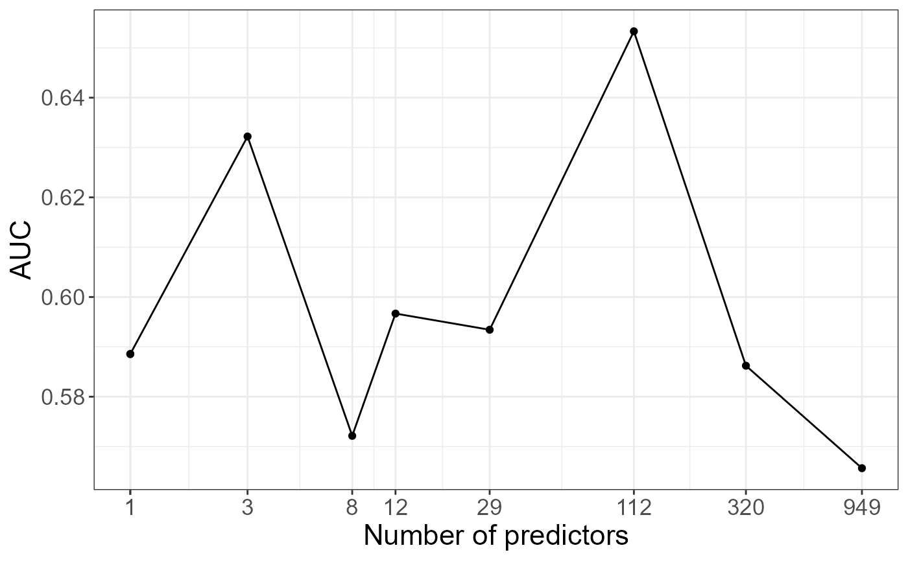

snp_PRS.RdPolygenic Risk Scores with possible clumping and thresholding.
snp_PRS(G, betas.keep, ind.test = rows_along(G), ind.keep = cols_along(G), same.keep = rep(TRUE, length(ind.keep)), lpS.keep = NULL, thr.list = 0)
| G | A FBM.code256
(typically |
|---|---|
| betas.keep | Numeric vector of weights associated with each SNP
corresponding to |
| ind.test | The individuals on whom to project the scores. Default uses all. |
| ind.keep | Column (SNP) indices to use (if using clumping, the output of snp_clumping). Default doesn't clump. |
| same.keep | A logical vector associated with |
| lpS.keep | Numeric vector of |
| thr.list | Threshold vector on |
A matrix of scores, where rows correspond to ind.test and
columns correspond to thr.list.
test <- snp_attachExtdata() G <- big_copy(test$genotypes, ind.col = 1:1000) CHR <- test$map$chromosome[1:1000] POS <- test$map$physical.position[1:1000] y01 <- test$fam$affection - 1 # PCA -> covariables obj.svd <- snp_autoSVD(G, infos.chr = CHR, infos.pos = POS)#> #> Phase of clumping (on MAF) at r^2 > 0.2.. keep 952 SNPs. #> #> Iteration 1: #> Computing SVD.. #> 0 outlier detected.. #> #> Converged!# train and test set ind.train <- sort(sample(nrow(G), 400)) ind.test <- setdiff(rows_along(G), ind.train) # 117 # GWAS gwas.train <- big_univLogReg(G, y01.train = y01[ind.train], ind.train = ind.train, covar.train = obj.svd$u[ind.train, ]) # clumping ind.keep <- snp_clumping(G, infos.chr = CHR, ind.row = ind.train, S = abs(gwas.train$score)) # -log10(p-values) and thresolding summary(lpS.keep <- -predict(gwas.train)[ind.keep])#> Min. 1st Qu. Median Mean 3rd Qu. Max. #> 0.000565 0.132700 0.322159 0.482021 0.668394 7.511245thrs <- seq(0, 4, by = 0.5) nb.pred <- sapply(thrs, function(thr) sum(lpS.keep > thr)) # PRS prs <- snp_PRS(G, betas.keep = gwas.train$estim[ind.keep], ind.test = ind.test, ind.keep = ind.keep, lpS.keep = lpS.keep, thr.list = thrs) # AUC as a function of the number of predictors aucs <- apply(prs, 2, AUC, target = y01[ind.test]) library(ggplot2) qplot(nb.pred, aucs) + geom_line() + scale_x_log10(breaks = nb.pred) + labs(x = "Number of predictors", y = "AUC") + theme_bigstatsr()